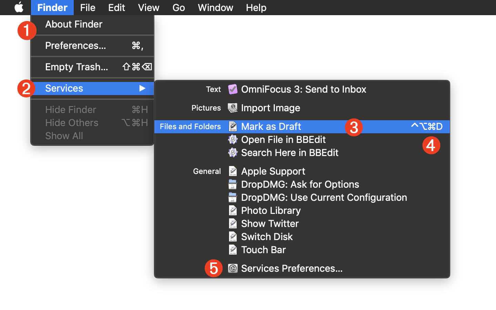
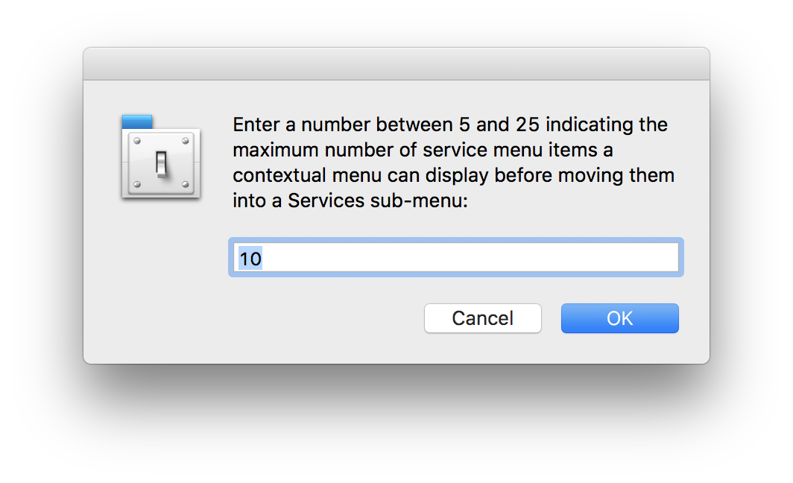
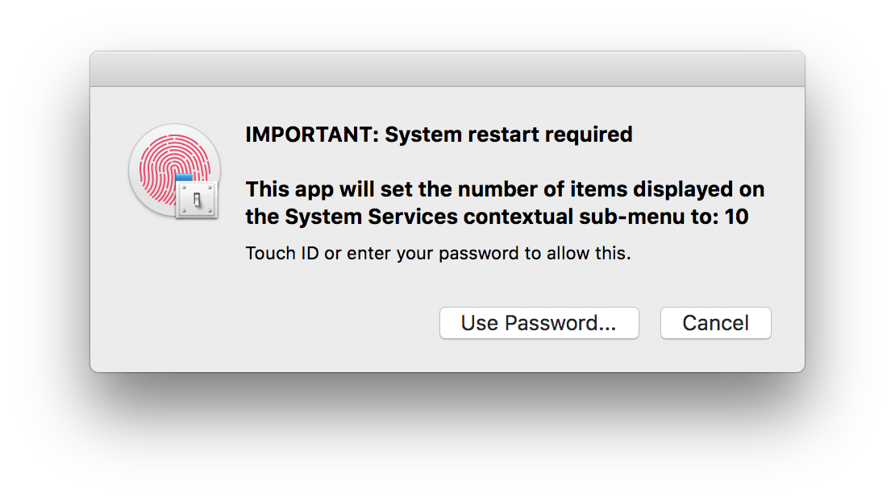
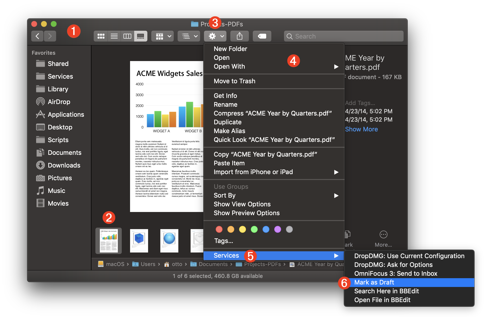
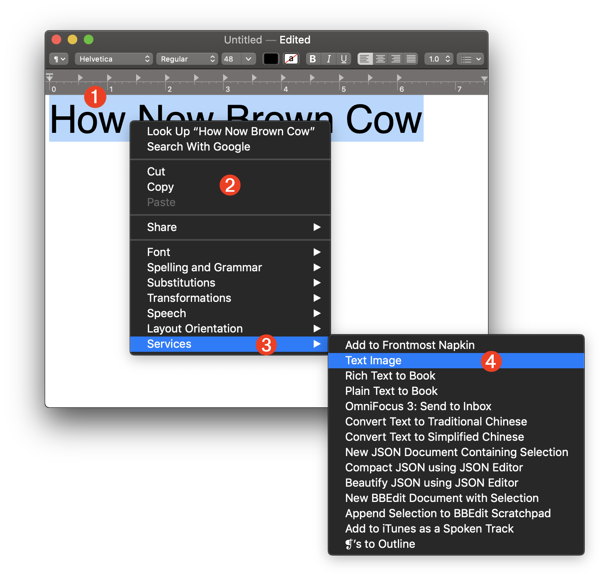

TAP TO HIDE SIDEBAR


System Services
The contextual System Service architecture has been an integral component of the Mac’s operating system since the very first iterations of Mac OS X, continuing with the latest versions of macOS. System Services have enabled Mac applications to publish functionality that is contextually available for use with the pasteboard selection of other applications.
In addition, since Mac OS X Snow Leopard, Automator has included the ability to publish its workflows as contextual System Services, available from the Services menu and application contextual menus throughout the OS. This practice continues with the current versions of macOS. Quick Action workflows are also considered to be System Services workflows, accessible from the following service access points.
Application Services Sub-Menu
Many, if not most of macOS applications, include the Services sub-menu item on their Application menus. From this sub-menu, you can see and access the services installed on the computer, as well as access the Services preferences in the System Preferences application.

1 The application menu appears below the title of the frontmost (current) application.
2 The Services sub-menu that displays the services contextually available for the current application.
3 An available service whose input requirements have been met.
4 This service has a key combination assigned to it by the user so that it can be triggered from the computer keyboard.
5 A menu option for opening the Services tab in the Keyboard pane of the System Preferences application.
Finder Contextual Menu
The Finder displays a contextual action options for selected items by either control-clicking the objects to summon the contextual menu overlay, or by pressing the Action menu control in the toolbar of a Finder window.
At the bottom of the Finder contextual menus are available services or the Services sub-menu, which (by default) is displayed if more than five (5) services are available for the current selection.
| DO THIS ► | To adjust the number of service items at which a sub-menu is displayed, DOWNLOAD and run the Services Contextual Menu Item Utility applet provided by this website. NOTE: use of this applet requires a system restart.   |
The Finder Action contextual menu:

1 A Finder window.
2 An item selected in the Finder window.
3 The Action menu control.
4 The Finder’s contextual menu.
5 The Services sub-menu.
6 A selected system service for processing the selected Finder item.
Text Contextual Menu
System Services may also be available for processing text selections within applications that support its use, such as TextEdit (show below).
NOTE: not all applications support the display of the System Services menu on their contextual menus. In those instances, the system service may be still accessed from the Services sub-menu in the Application menu.

1 A text selection within an application.
2 The contextual menu, typically summoned by control-clicking in the text seletion.
3 The Services sub-menu.
4 A system service for processing the selected text.
DISCLAIMER